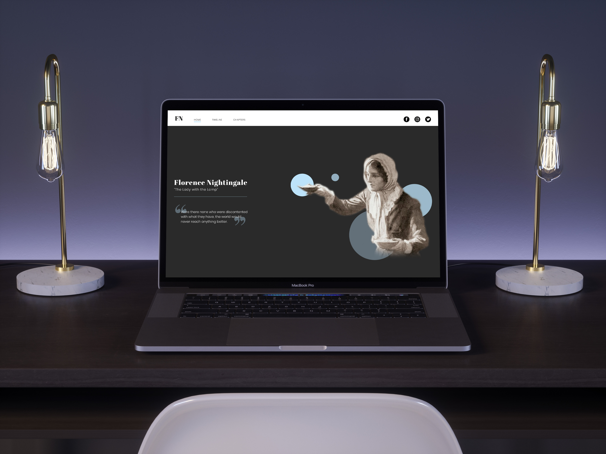
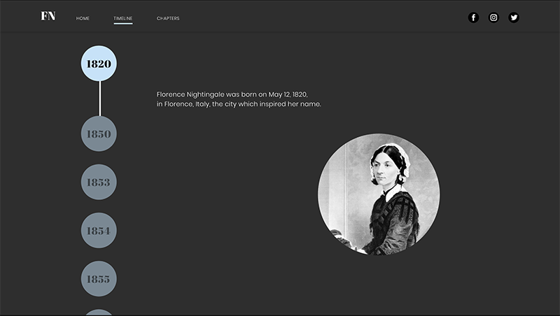
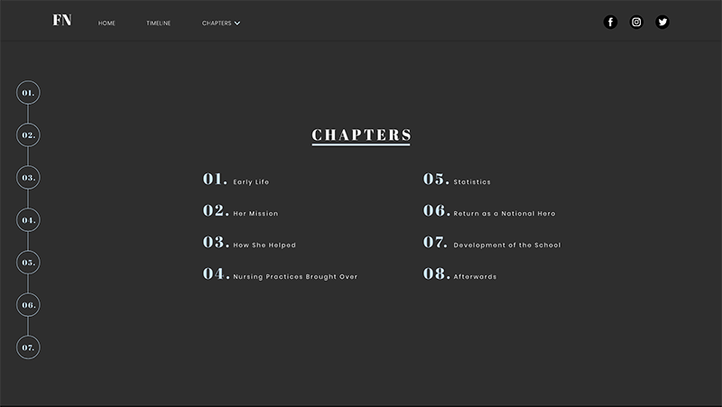
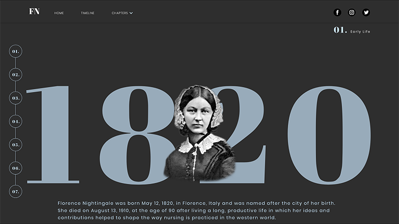
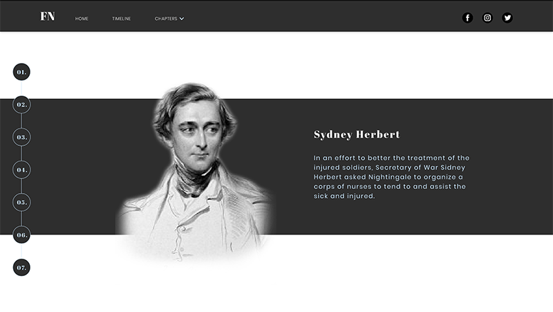

This historical website showcases highlights of Florence Nightingale in an interesting way to target high-school students. The use of dark colors, grey and blue, was used to emphasize the name “lady with the lamp.” Blue was used because of its relation to healthcare. The information is broken up in order to make it easier to read and to keep the attention of the audience.



